Commissioned works
MOME Fashion and Textile Design
Collaboration with Adrienn Szövérffi
Designer: Panna Makai
Talents: Sára Krizsán, Janka Kováts, András Fülöp
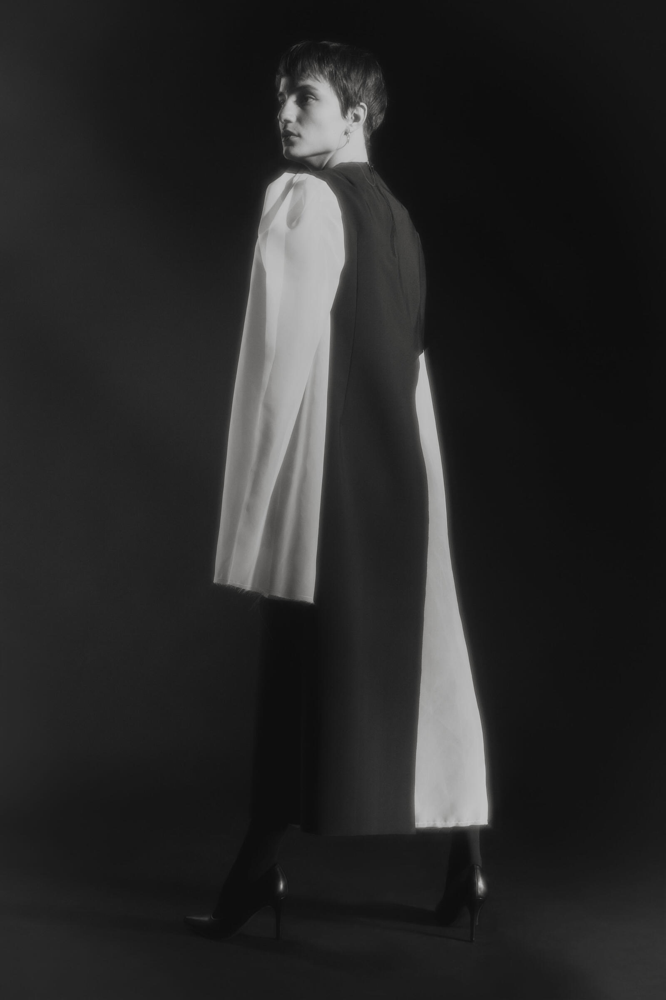
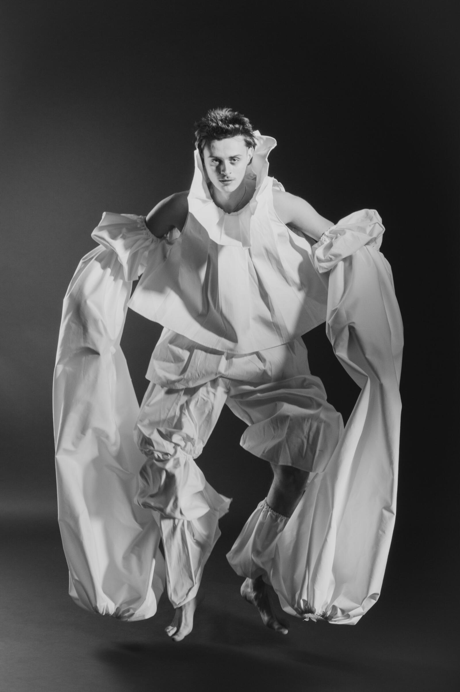
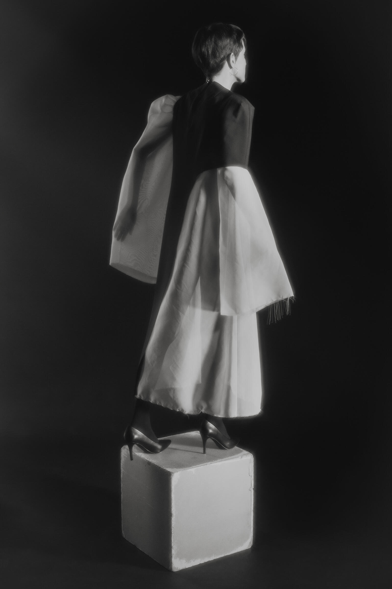
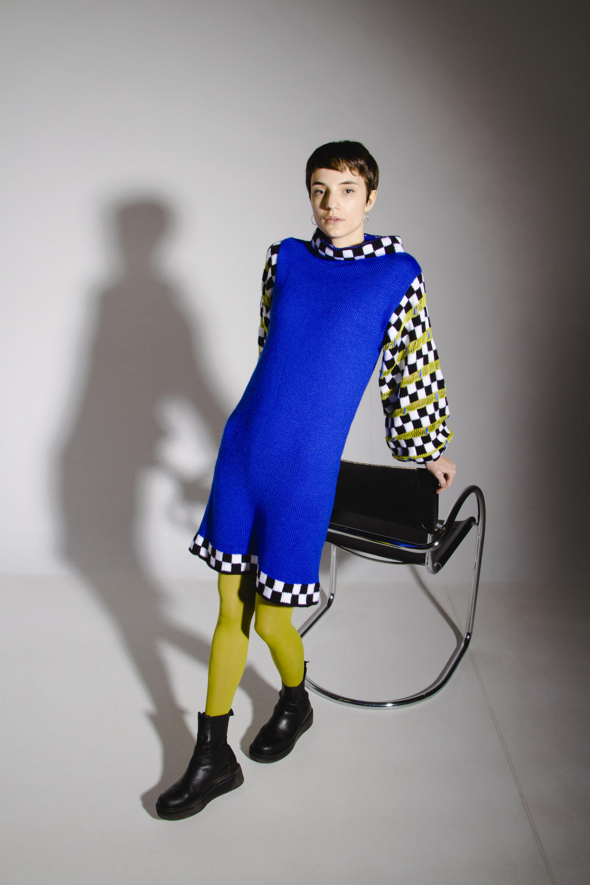
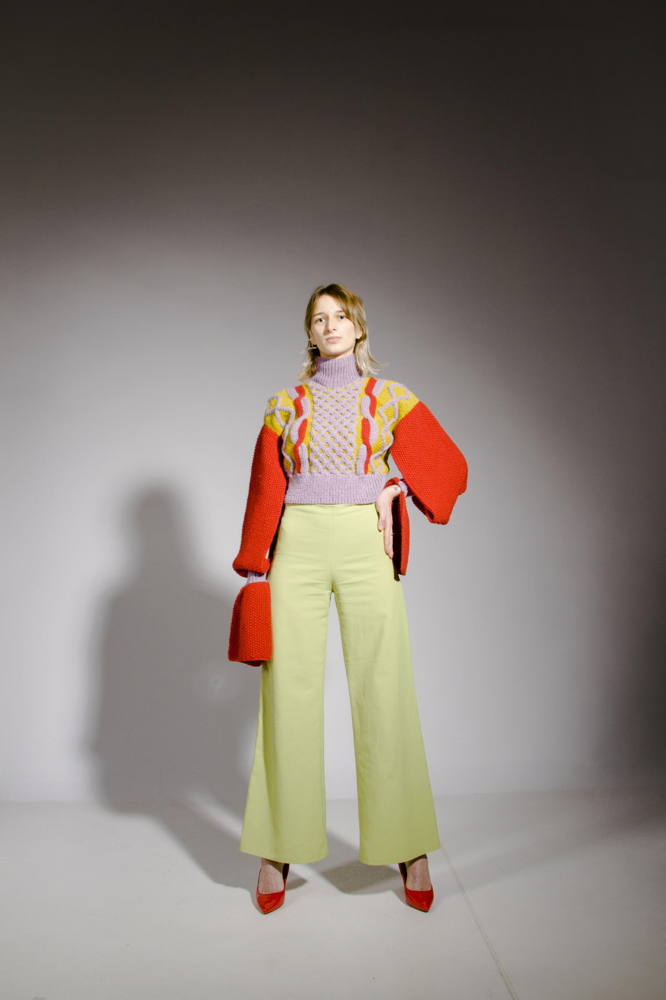
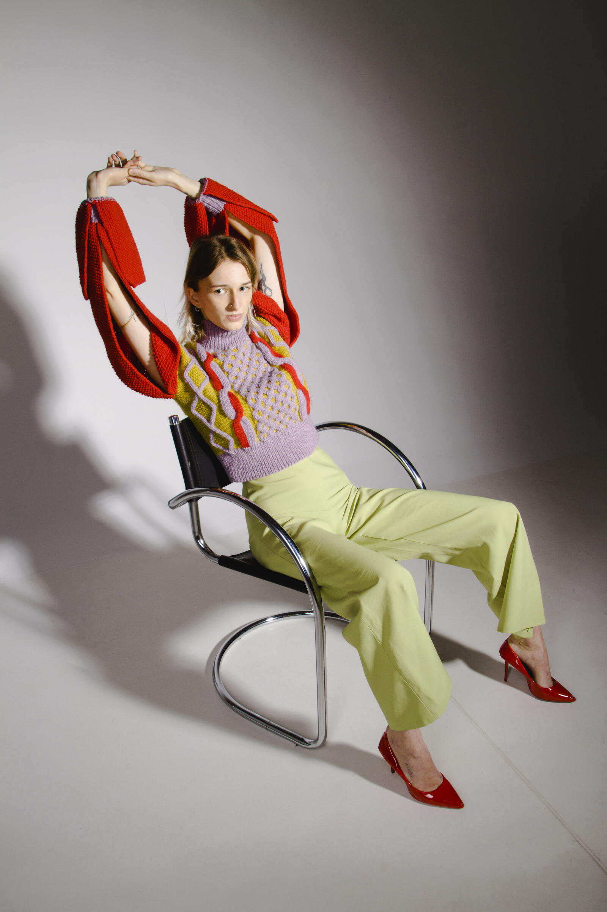
SUSU Ceramics
Designers: Szaffi Asbóth, Flóra Bodnár
Assistant: Szofi Varga
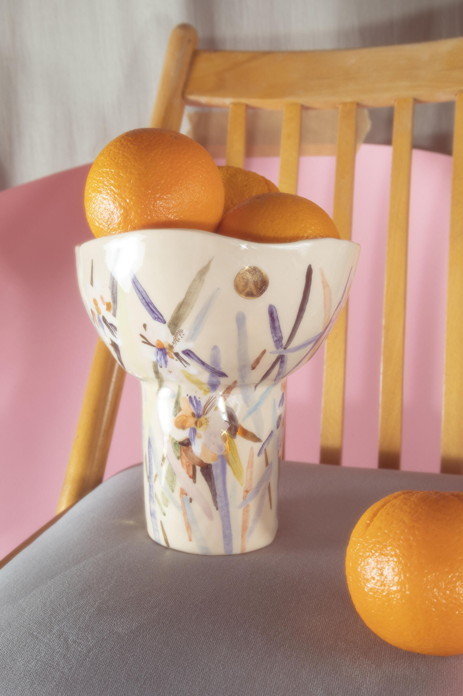
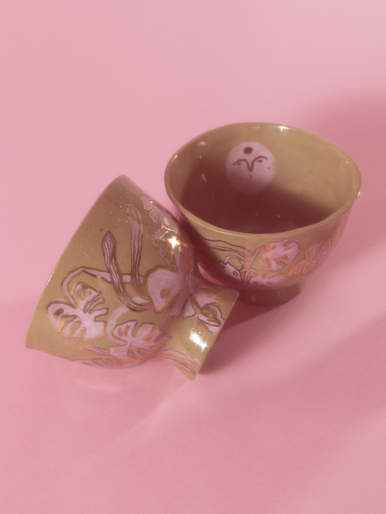
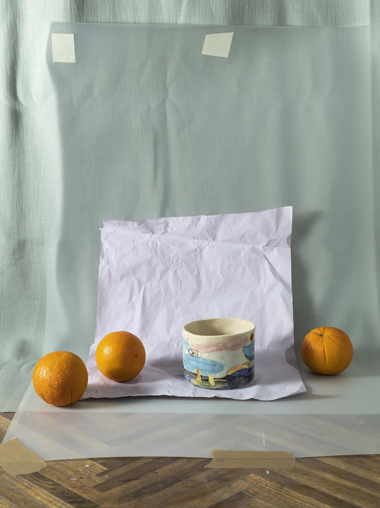
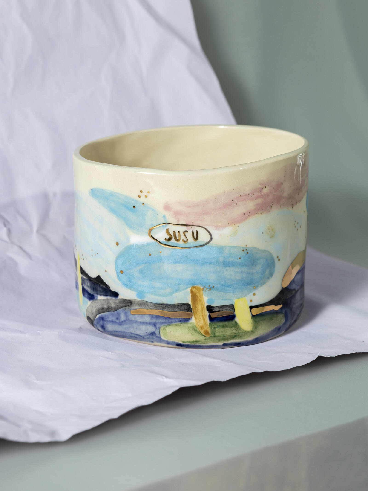
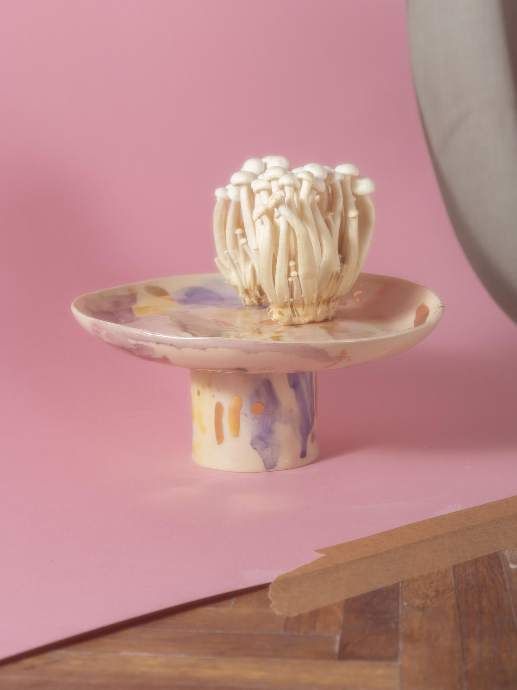
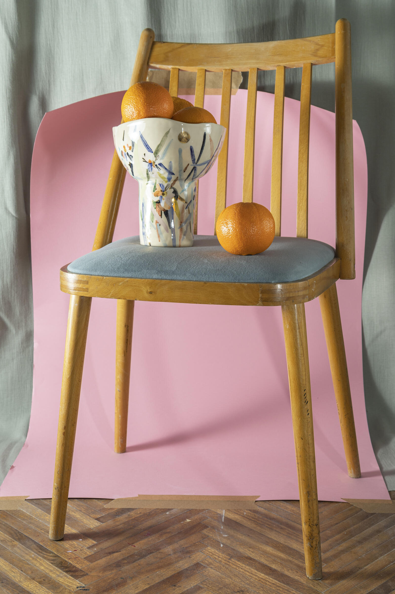
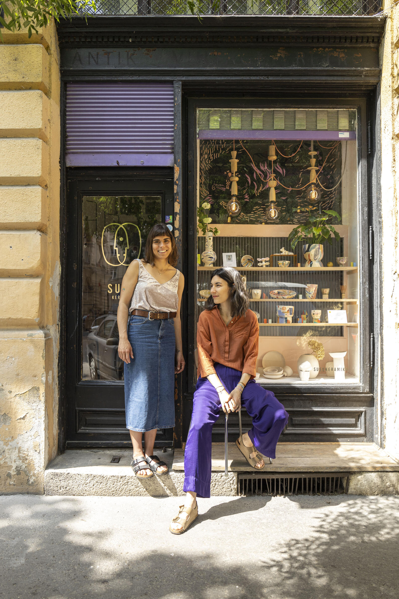
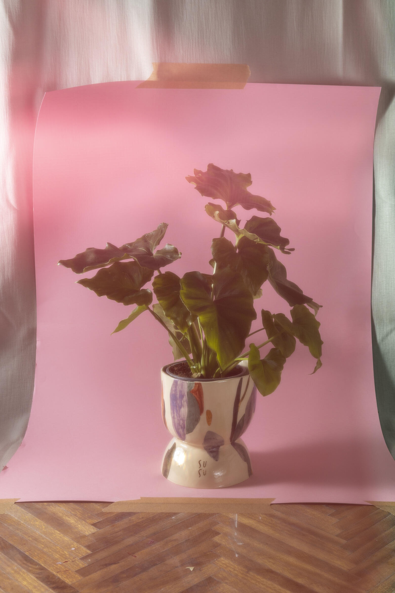
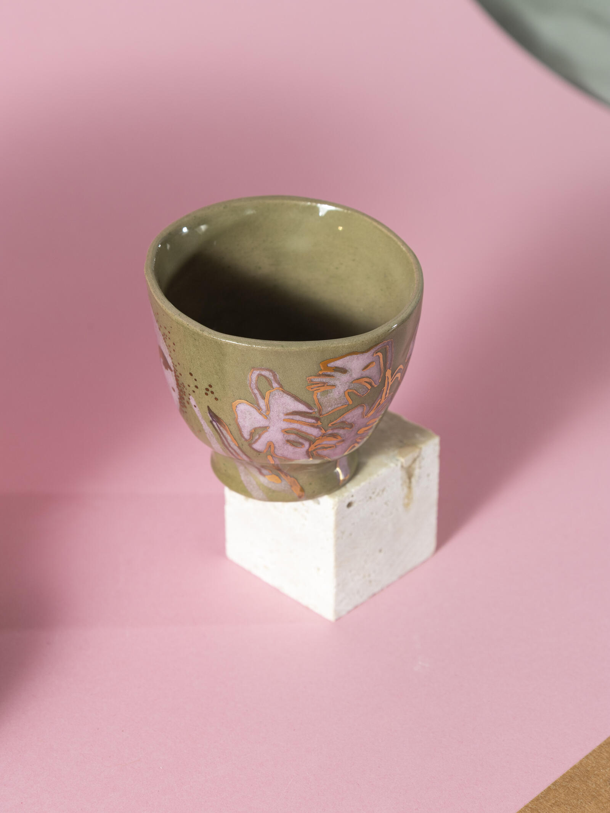